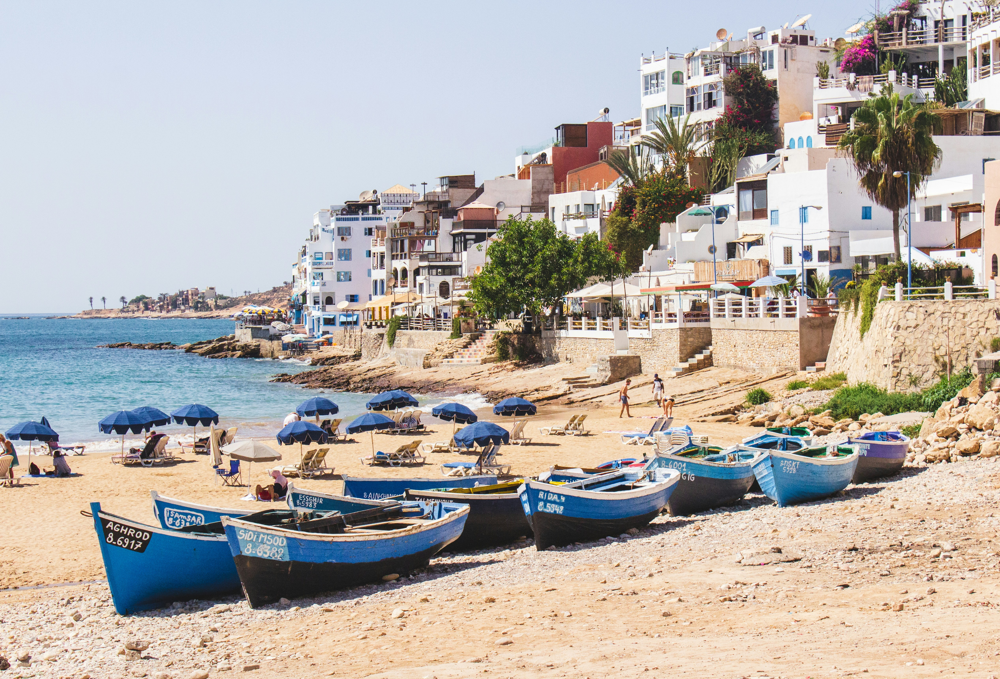
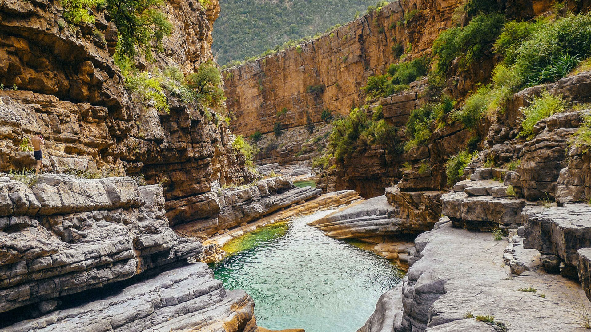
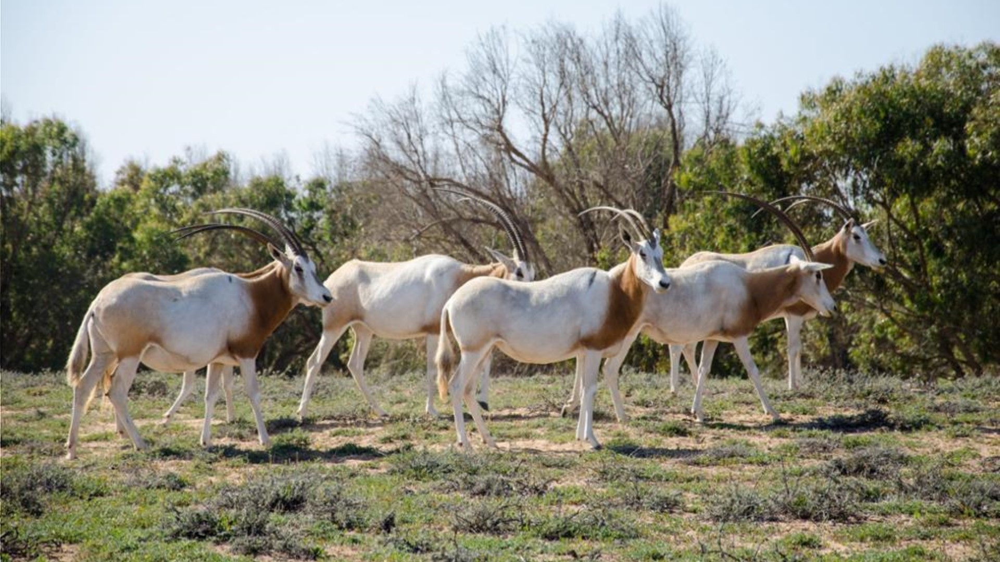
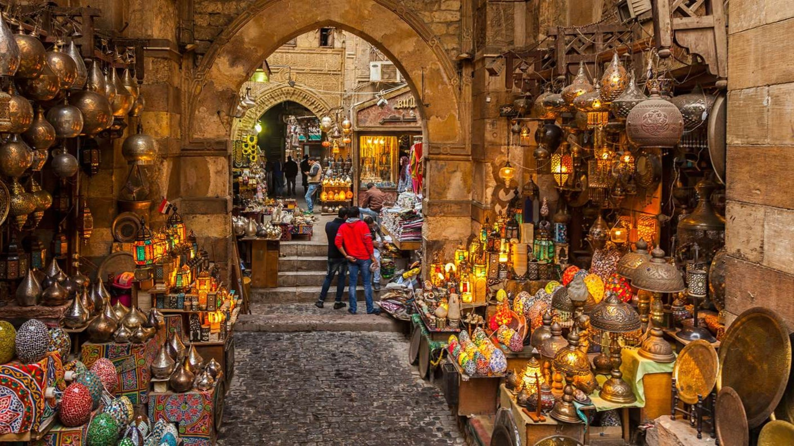

Taghazout
Nichée le long de la côte atlantique du Maroc juste au nord d'Agadir. Taghazout est un véritable paradis côtier où les plages dorées rencontrent les vagues turquoise. Autrefois un village de pêcheurs tranquille, il est aujourd'hui un havre de surf dynamique...



